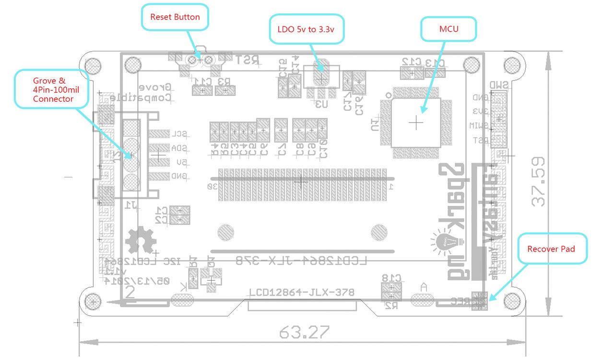
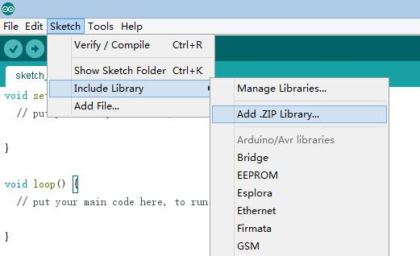
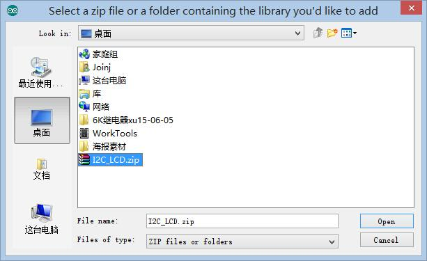
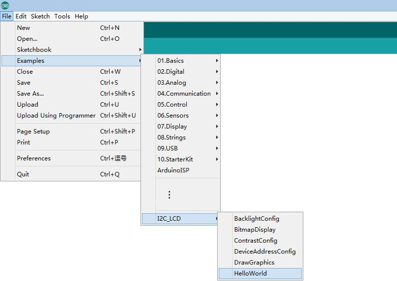
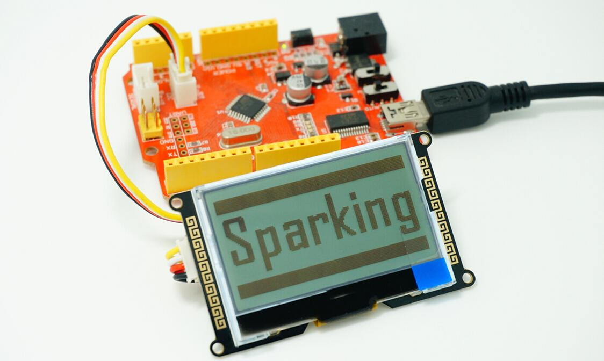
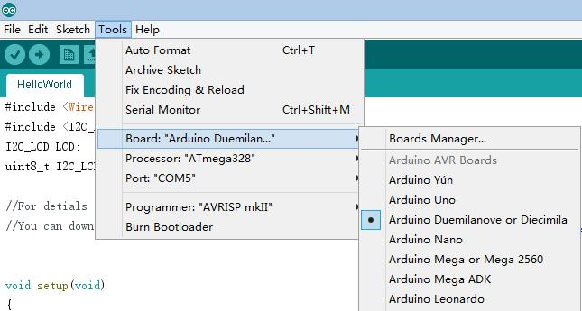
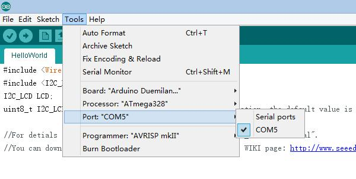
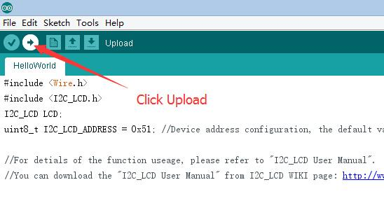

I2C LCD
I2C_LCD is an easy-to-use display module, It can make display easier. Using it can reduce the difficulty of make, so that makers can focus on the core of the work.
We developed the Arduino library for I2C_LCD, user just need a few lines of the code can achieve complex graphics and text display features. It can replace the serial monitor of Arduino in some place, you can get running informations without a computer.
More than that, we also develop the dedicated picture data convert software (bitmap converter)，now is available to support PC platform of windows, Linux, Mac OS. Through the bitmap convert software you can get your favorite picture displayed on I2C_LCD, without the need for complex programming.
I2C_LCD can provide you with a very convenient way of make. Enjoy yourself！
Features
- Only 2 Arduino pins are occupied (Use I2C interface).
- Supports standard I2C mode (100Kbit/s) and fast I2C mode (400Kbit/s).
- Compatible with multiple communication logic levels: 2.8~5VDC.
- Arduino library supported, use a line of code to complete the display.
- Integrate 7 sizes of ASCll fonts, 5 graphics functions.
- Provide dedicated picture data convert software (Bitmap Converter).
- Most of the complex operation is processed by I2C_LCD independent controller, saving user controller resources.
- Supports cursor function, can set up 16 cursor flicker frequency.
- Supports 128 level backlight brightness adjustment.
- Support 64 level screen contrast adjustment.
- Support device address modification.
- Supports 127 I2C_LCD work in parallel.
- When debugging code, it can take the place of the serial monitor to monitor the program running state.
- Two abnormal recovery methods are provided: reset and restore the factory settings.
- Compatible with Grove interface and 4Pin-100mil interface (under the Grove socket).
- 4 symmetrical fixed hole design for easy user installation.
- China style unique appearance.
Interface Function

Specifications
| Screen Type
|
Dual color LCD
|
| Screen Resolution
|
128*64 Pixels
|
| Screen Active Area (L*W)
|
47.1*26.5mm
|
| Individual Pixel Size
|
0.33*0.33mm
|
| Communication Mode
|
I2C(100Kbit/s and 400Kbit/s)
|
| Controler
|
STM8S005KBT6
|
| Operating Frequency
|
16 MHz
|
Electrical characteristics
| Parameter
|
Min.
|
Typical
|
Max.
|
Uint
|
| Supply voltage（5V to GND）
|
4.5
|
5
|
5.5
|
V
|
| Logic Voltage（SCL/SDA）
|
2.8
|
5
|
5.5
|
V
|
| HBM ESD
|
-
|
5000
|
-
|
V
|
| Temperature
|
-20
|
25
|
70
|
C
|
How to use?
Step 1: Install the latest version of Arduino IDE to your computer.
Step 2: Download and install the I2C_LCD Library to Arduino IDE:
- Open Arduino IDE, click Sketch -> Include Library -> Add .ZIP Library.

- Find and select the I2C_LCD.zip file you just downloaded.

- Restart the Arduino IDE.
Step 3: Chose the example project which you like. (Take "HelloWorld" project for example here.)
- Click File -> Examples -> I2C_LCD -> "HelloWorld".

Step 4: Connect I2C_LCD to your Seeeduino Vx board with Grove cable. Then connect Seeeduino Vx board to your computer.

Step 5: Select your board and serial port.
- Select the board: Click Tools -> Board -> Arduino Duemilanove or Diecimila(Seeeduino V3.0 Or early version), Arduino Uno(Seeeduino Lotus or Seeeduino V4.0).

- Select the COM: Click Tools -> Serial Port -> COMX(which connected with your board.)

Step 6: Upload the program and enjoy yourself!

PS:
- 1. For more details about library install please refer to http://www.arduino.cc/en/Guide/Libraries.
- 2. If you encounter other problems during the use, please refer to the User Manual for help. If you can't solve it, please contact us.
- Author: Joney
- E-mail: Joney.s@foxmail.com
- Sparking Work Space
Version Tracker
I2C_LCD Hardware:
| Revision
|
Descriptions
|
Release Date
|
| I2C_LCD V0.9
|
- Initial public release
|
Feb 15, 2014
|
| I2C_LCD v1.0
|
- Modify the power circuit wiring.
|
Mar 1, 2014
|
| I2C_LCD v1.1
|
- Modify the logo position.
- Modify the board shape.
- Modify the button position.
|
May 8, 2014
|
| I2C_LCD v1.2
|
- Add production test point.
|
Sep 18, 2015
|
I2C_LCD Library:
| Revision
|
Descriptions
|
Release Date
|
| I2C_LCD Library v1.0
|
- Initial public release
|
July 6, 2014
|
| I2C_LCD Library v1.10
|
- Add LCD print function.
- Edit DeviceAddressConfig example.
|
Jun 25, 2015
|
| I2C_LCD v1.11
|
- Modify the bug that '\t' can't print.
|
Jun 27, 2015
|
| I2C_LCD v1.12
|
- Modify the bug that can't dispaly bitmap when y coordinate is more than 16.
|
Sep 4, 2015
|
| I2C_LCD v1.20
|
- Reorganize I2C_LCD driver interface, make it easy to transplant to any other boards.
|
Apr 16, 2016
|
Resource
- Keep updating the latest version.
- I2C_LCD Library
- I2C_LCD User Manual EN
- I2C_LCD User Manual CN
- BitmapConverter(ForWindows)
- BitmapConverter(ForMacOS)
- BitmapConverter(ForLinux)
- I2C_LCD_SourceFile
Copyright (c) 2008-2016 Seeed Development Limited (
www.seeedstudio.com /
www.seeed.cc)
This static html page was created from http://www.seeedstudio.com/wiki